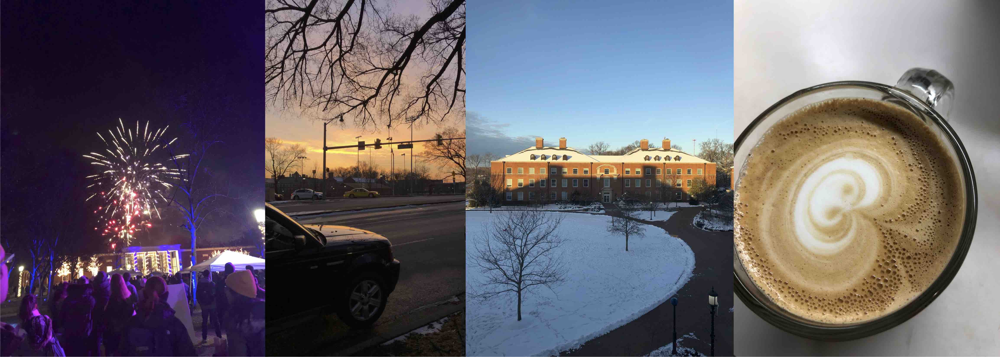
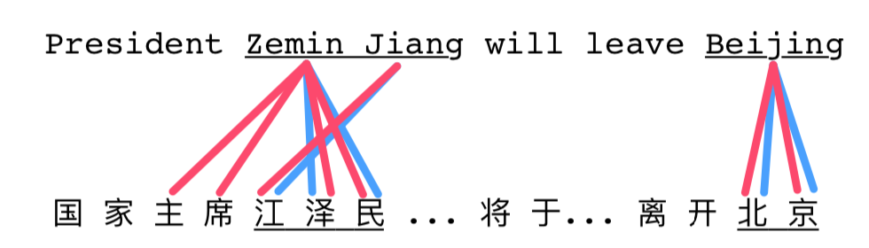
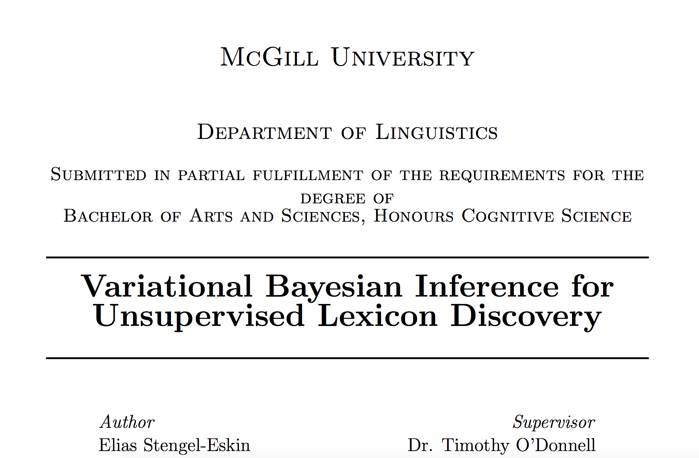
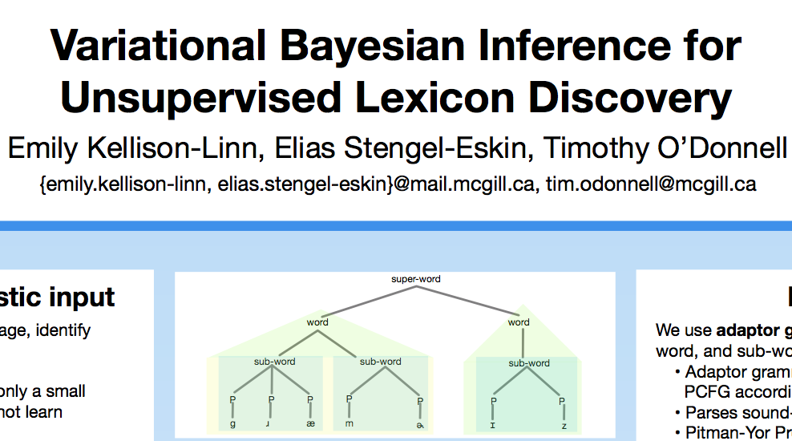
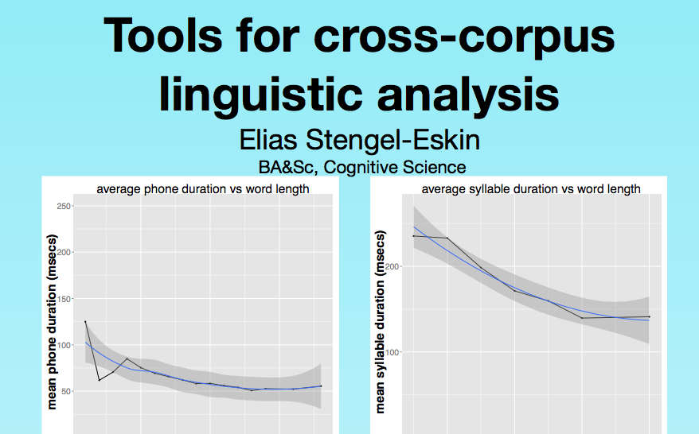

I am a second-year Ph.D. student at the Center for Language and Speech Processing supervised by Benjamin Van Durme, where I am working on broad questions in computational semantics.
My most recent line of work is on semantic parsing for the Universal Decompositional Semantics formalism.
I'm also interested in applying ideas from the philosophy of language to NLP.
Before starting my Ph.D., I received my B.A.&Sc. with First Class Honours in Cognitive Science from McGill University, focusing in computer science and linguistics.
While at McGill, I worked as a research assistant at the Montreal Language Modeling Lab (MLML), now MCQLL.
I wrote my honours thesis (supervised by Timothy O'Donnell) on a variational inference algorithm for a model of language acquisition.
News
- 09-04-2019 My first accepted paper (EMNLP 2019) as a graduate student is now available on arXiv
- 04-10-2019 I'm incredibly honored to have been awarded an NSF GRFP fellowship!
- 08-18-2018 I'm excited to be starting as a PhD student at CLSP, supervised by Benjamin Van Durme!
Publications
Stengel-Eskin, Elias, Tzu-Ray Su, Matt Post, and Benjamin Van Durme. "A Discriminative Neural Model for Cross-Lingual Word Alignment." Proceedings of the 2019 Conference on Empirical Methods in Natural Language Processing and the 9th International Joint Conference on Natural Language Processing (EMNLP-IJCNLP). 2019.
McAuliffe, Michael, Elias Stengel-Eskin, Michaela Socolof, and Morgan Sonderegger. "Polyglot and Speech Corpus Tools: A System for Representing, Integrating, and Querying Speech Corpora." In INTERSPEECH, pp. 3887-3891. 2017.
Recent Work

Discriminative Alignment
Word alignments are useful for a number of downstream tasks, but NMT has largely forgotten about them. We reintroduce old notions of supervised alignment and present a neural model for aligning words between a sentence and its translation. We apply our aligner to dataset projection for NER.

Honours Thesis
I describe a variational inference scheme and novel phonological system for the Unsupervised Lexicon Discovery model presented by Lee et al. (2015)

Montreal AI Symposium poster
A poster describing the work laid out in my thesis, presented at the Montreal AI Symposium (2017) with Emily Kellison-Linn.

ARIA research poster
A poster I was invited to present at the McGill Arts Undergraduate Research Internship Research Event (2017) on my experience as an ARIA (Arts Research Internship Award) recipient.
Talks/Presentations/Slides